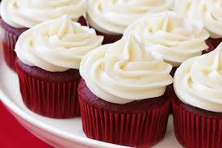

“The measuring and mixing always smoothed out her thinking processes - nothing was as calming as creaming butter - and when the kitchen was warm from the oven overheating and the smell of baking chocolate, she took final stock of where she'd been and where she was going. Everything was fine.” ― Jennifer Crusie, Maybe This Time
A foolproof brownie recipe for a squidgy chocolate bake. Watch our recipe video to help you get a perfect traybake every time.
A simple but very impressive pud, light enough to have a slice to finish a big meal.
“Are you a witch?” I ask, reaching in and taking a bite of one. It’s like Monster Cake, the Sequel—freaking Christmas in my mouth. I already want more before I’ve even managed to chew. Emma Lord, Tweet Cute
 Bake a batch of red velvet cupcakes as a treat. With chocolate sponge and a cream cheese topping, they're perfect for elevenses served with a cuppa
These individual sugar-dipped cupcakes are baked not fried but taste just as delicious and are best straight from the oven
 Enjoy this fabulous honey cake made with mixed spice and ginger and a lovely honey butter drizzle topping. It's ideal for afternoon tea or elevenses
Enjoy this fabulous honey cake made with mixed spice and ginger and a lovely honey butter drizzle topping. It's ideal for afternoon tea or elevenses
Delight friends with an afternoon tea that includes this easy carrot cake. You can bake the cake, freeze it and just drizzle over the icing on the day